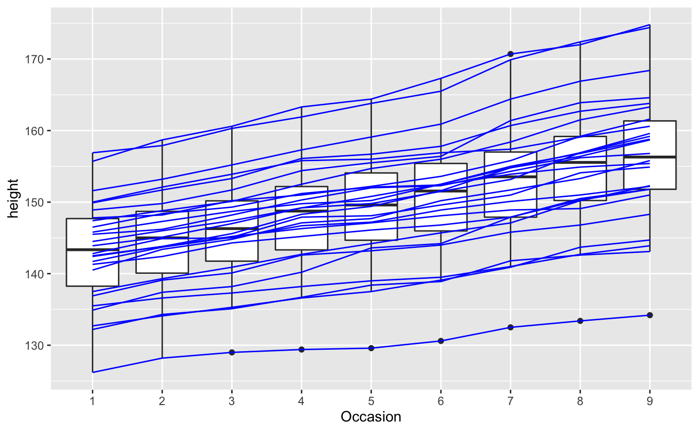

Aesthetics: grouping
Examples
# By default, the group is set to the interaction of all discrete variables in the # plot. This often partitions the data correctly, but when it does not, or when # no discrete variable is used in the plot, you will need to explicitly define the # grouping structure, by mapping group to a variable that has a different value # for each group. # For most applications you can simply specify the grouping with # various aesthetics (colour, shape, fill, linetype) or with facets. p <- ggplot(mtcars, aes(wt, mpg)) # A basic scatter plot p + geom_point(size = 4)# Using linetypes rescale01 <- function(x) (x - min(x)) / diff(range(x)) ec_scaled <- data.frame( date = economics$date, lapply(economics[, -(1:2)], rescale01)) ecm <- reshape2::melt(ec_scaled, id.vars = "date") f <- ggplot(ecm, aes(date, value)) f + geom_line(aes(linetype = variable))# Using facets k <- ggplot(diamonds, aes(carat, stat(density))) + geom_histogram(binwidth = 0.2) k + facet_grid(. ~ cut)# There are three common cases where the default is not enough, and we # will consider each one below. In the following examples, we will use a simple # longitudinal dataset, Oxboys, from the nlme package. It records the heights # (height) and centered ages (age) of 26 boys (Subject), measured on nine # occasions (Occasion). # Multiple groups with one aesthetic h <- ggplot(nlme::Oxboys, aes(age, height)) # A single line tries to connect all the observations h + geom_line()# Different groups on different layers h <- h + geom_line(aes(group = Subject)) # Using the group aesthetic with both geom_line() and geom_smooth() # groups the data the same way for both layers h + geom_smooth(aes(group = Subject), method = "lm", se = FALSE)# Changing the group aesthetic for the smoother layer # fits a single line of best fit across all boys h + geom_smooth(aes(group = 1), size = 2, method = "lm", se = FALSE)# Overriding the default grouping # The plot has a discrete scale but you want to draw lines that connect across # groups. This is the strategy used in interaction plots, profile plots, and parallel # coordinate plots, among others. For example, we draw boxplots of height at # each measurement occasion boysbox <- ggplot(nlme::Oxboys, aes(Occasion, height)) boysbox + geom_boxplot()# There is no need to specify the group aesthetic here; the default grouping # works because occasion is a discrete variable. To overlay individual trajectories # we again need to override the default grouping for that layer with aes(group = Subject) boysbox <- boysbox + geom_boxplot() boysbox + geom_line(aes(group = Subject), colour = "blue")